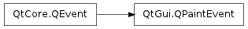

QPaintEvent ¶

Detailed Description ¶
The PySide.QtGui.QPaintEvent class contains event parameters for paint events.
Paint events are sent to widgets that need to update themselves, for instance when part of a widget is exposed because a covering widget was moved.
The event contains a PySide.QtGui.QPaintEvent.region() that needs to be updated, and a PySide.QtGui.QPaintEvent.rect() that is the bounding rectangle of that region. Both are provided because many widgets can’t make much use of PySide.QtGui.QPaintEvent.region() , and PySide.QtGui.QPaintEvent.rect() can be much faster than PySide.QtGui.QPaintEvent.region() . boundingRect() .
Automatic Clipping ¶
Painting is clipped to PySide.QtGui.QPaintEvent.region() during the processing of a paint event. This clipping is performed by Qt’s paint system and is independent of any clipping that may be applied to a PySide.QtGui.QPainter used to draw on the paint device.
As a result, the value returned by QPainter.clipRegion() on a newly-constructed PySide.QtGui.QPainter will not reflect the clip region that is used by the paint system.
- class PySide.QtGui. QPaintEvent ( paintRect ) ¶
- class PySide.QtGui. QPaintEvent ( paintRegion )
-
Parameters: - paintRegion – PySide.QtGui.QRegion
- paintRect – PySide.QtCore.QRect
Constructs a paint event object with the rectangle that needs to be updated. The region is specified by paintRect .
Constructs a paint event object with the region that needs to be updated. The region is specified by paintRegion .
- PySide.QtGui.QPaintEvent. rect ( ) ¶
-
Return type: PySide.QtCore.QRect Returns the rectangle that needs to be updated.
- PySide.QtGui.QPaintEvent. region ( ) ¶
-
Return type: PySide.QtGui.QRegion Returns the region that needs to be updated.